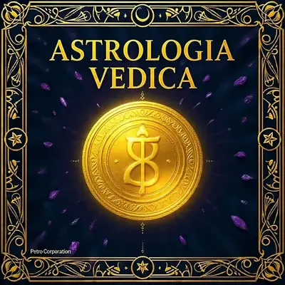

Astrologia Vedica (Jyotish): la Scienza della Luce

Storia e Origini del Jyotish
L’astrologia vedica, in sanscrito Jyotish (“scienza della luce”), è uno dei sei Vedanga, le discipline ausiliarie che da millenni accompagnano lo studio dei Veda, i testi sacri più antichi dell’induismo. Le sue radici affondano in osservazioni astronomiche già presenti nel Rigveda, ma il sistema predittivo che conosciamo oggi si è codificato e raffinato soprattutto nei secoli successivi, attraverso generazioni di astronomi-sacerdoti che hanno tramandato calcoli sempre più precisi sulle posizioni planetarie e sui loro effetti nella vita umana, costruendo nel tempo un corpus dottrinale tra i più articolati e longevi dell’intera storia astrologica mondiale.
Il testo classico di riferimento è il Brihat Parashara Hora Shastra, attribuito al saggio Parashara, che descrive in modo sistematico pianeti, case, segni e periodi planetari. Un altro pilastro è il Surya Siddhanta, trattato astronomico che ha fissato per secoli i calcoli delle posizioni planetarie nel subcontinente indiano. A differenza dell’astrologia occidentale moderna, spesso orientata all’introspezione psicologica, il Jyotish è nato come strumento pratico legato alla vita religiosa e sociale: scegliere il momento propizio (muhurta) per un matrimonio, comprendere il proprio dharma e il karma accumulato.
Uno dei testi fondativi del Jyotish, attribuito al saggio Parashara. I manoscritti originali, tramandati di guru in guru, contenevano non solo regole astrologiche ma interi sistemi di calcolo astronomico per determinare le posizioni planetarie con precisione matematica.
Oggi il Jyotish convive con l’astrologia occidentale in un dialogo crescente: molti appassionati confrontano i due sistemi per ottenere una lettura più completa del proprio tema natale, apprezzando la profondità predittiva temporale che il sistema vedico offre attraverso le Dasha, assente nella tradizione tropicale classica. In India questa disciplina resta parte viva della cultura quotidiana, consultata per matrimoni, inaugurazioni e scelte importanti, mentre in Occidente sta conoscendo una riscoperta crescente grazie a praticanti, scuole specializzate e una comunità internazionale sempre più ampia e curiosa.
Astrologia Vedica vs Occidentale: Sidereale contro Tropicale
La differenza più importante tra i due sistemi riguarda il punto di partenza dello zodiaco. L’astrologia occidentale usa lo zodiaco tropicale, ancorato all’equinozio di primavera: 0° Ariete coincide sempre con l’inizio della primavera. L’astrologia vedica usa invece lo zodiaco siderale, ancorato alla posizione reale delle costellazioni fisse nel cielo, rendendo il sistema più astronomicamente letterale ma sfasato rispetto a quello tropicale.
A causa della precessione degli equinozi, oggi i due zodiaci sono sfasati di circa 24 gradi. Questo scarto si chiama Ayanamsa (il più usato è quello di Lahiri). Per questo chi è Leone in Occidente può scoprire di essere Cancro nel proprio tema vedico.
A differenza del sistema tropicale occidentale, il Jyotish ancora i suoi segni alle costellazioni reali nel cielo. L’eclittica viene divisa in base alle stelle di riferimento, non all’equinozio: un sistema più letterale astronomicamente, ma sfasato rispetto ai calcoli occidentali.
Ci sono anche differenze di metodo: il Jyotish dà un peso enorme alla Luna e alla Nakshatra in cui si trova alla nascita, più che al Sole; usa il sistema predittivo delle Dasha per collocare gli eventi nel tempo con precisione; e si affida a carte divisionali (varga) multiple per analizzare aspetti specifici della vita, come matrimonio o carriera.
I Nava Graha: i Nove Pianeti Vedici
Il Jyotish lavora con nove corpi celesti, i Nava Graha (“nove afferratori”), che includono anche i due nodi lunari, assenti nell’astrologia occidentale classica. Ogni Graha non è un semplice corpo celeste ma una vera e propria entità cosmica con personalità, poteri e influenze specifiche sulla vita umana.
Nel Jyotish i nove pianeti non sono semplici corpi celesti ma entità cosmiche con personalità e poteri propri, rappresentate come divinità in forma umana o animale nei templi indiani. Rahu e Ketu, i due nodi lunari, sono privi di corpo fisico e simboleggiano desiderio materiale e distacco spirituale.
Le 12 Rashi: i Segni Zodiacali Vedici
Le Rashi corrispondono ai dodici segni, calcolati però sullo zodiaco siderale. I nomi e i simboli sono molto simili a quelli occidentali, ma la loro posizione nel cielo è sfasata dall’Ayanamsa di circa un mese rispetto al calendario tropicale.
La ruota delle Rashi divide l’eclittica in dodici settori di 30° ciascuno. A differenza della ruota occidentale, il punto 0° di Mesha è ancorato a riferimenti stellari fissi, non all’equinozio di primavera. Ogni Rashi è governata da un pianeta che ne colora profondamente il significato.
Le 27 Nakshatra: le Costellazioni Lunari
Le Nakshatra sono il vero cuore distintivo del Jyotish: 27 settori di 13°20’ ciascuno in cui è divisa l’eclittica, che tracciano il cammino mensile della Luna. La Nakshatra in cui si trovava la Luna al momento della nascita influenza profondamente carattere, compatibilità di coppia e il punto di partenza del sistema delle Dasha.
Le Nakshatra nascono dall’osservazione che la Luna impiega circa 27,3 giorni a completare il giro attorno alla Terra, sostando ogni notte in una diversa dimora stellare. Sistema antichissimo, già menzionato nell’Atharva Veda, con paralleli nella tradizione cinese (Xiu) e araba (Manazil al-Qamar).
Le 12 Case (Bhava)
Come in Occidente, anche il Jyotish divide il cielo natale in 12 case, ma con nomi e sfumature proprie legate alla filosofia indiana del dharma, artha, kama e moksha, i quattro scopi tradizionali della vita.
Le case nella carta vedica non sono mai vuote di significato: anche in assenza di pianeti, la casa è attivata dal suo signore (Bhavesh) e dalla Rashi che la occupa. La lettura incrociata tra pianeti, segni e case è il nucleo della pratica astrologica vedica classica.
Sé, corpo, personalità, vitalità
Ricchezza, famiglia, parola
Coraggio, fratelli, comunicazione
Casa, madre, radici, felicità
Figli, creatività, intelletto
Malattie, nemici, ostacoli
Matrimonio, partner, relazioni
Trasformazione, occulto, longevità
Fortuna, dharma, padre, spiritualità
Carriera, status sociale, azione
Guadagni, desideri, amicizie
Perdite, spiritualità, liberazione
Il Lagna e la Carta Natale (Kundali)
Il Lagna (Ascendente) è il segno che sorgeva all’orizzonte est nel momento esatto della nascita, e nel Jyotish è il vero punto di ancoraggio del tema natale, la lente attraverso cui si leggono tutte le altre posizioni planetarie.
Lo stile nord-indiano disegna la carta come un diamante con case fisse e segni che ruotano; lo stile sud-indiano usa una griglia quadrata con segni fissi e case che variano. Entrambi contengono le stesse informazioni, cambia solo la convenzione visiva di lettura.
Oltre alla carta principale (Rashi chart o D1), il Jyotish utilizza numerose carte divisionali (varga) per analizzare aspetti specifici: la più importante è la Navamsa (D9), usata soprattutto per approfondire matrimonio e vita spirituale, che raffina e a volte corregge le indicazioni della carta principale.
Il Sistema delle Dasha
Ciò che rende il Jyotish unico nel panorama mondiale è il suo sofisticato sistema predittivo basato sui tempi: le Dasha, periodi planetari che si succedono durante l’intera vita di una persona. Il sistema più diffuso è la Vimshottari Dasha, calcolata a partire dalla Nakshatra della Luna alla nascita, per un ciclo totale di 120 anni.
Il sistema Vimshottari assegna a ciascuno dei nove pianeti un periodo di anni in ordine fisso, a partire dal pianeta che governa la Nakshatra lunare natale. Il punto esatto della Luna nella Nakshatra determina quanti anni restano nel primo periodo.
Ogni periodo planetario maggiore (Mahadasha) si suddivide in sottoperiodi (Antardasha) governati dagli altri pianeti, permettendo una lettura molto più fine e dettagliata degli eventi nel tempo.
| Pianeta (Mahadasha) | Durata |
|---|---|
| ☋ Ketu | 7 anni |
| ♀️ Venere (Shukra) | 20 anni |
| ☀️ Sole (Surya) | 6 anni |
| 🌙 Luna (Chandra) | 10 anni |
| ♂️ Marte (Mangala) | 7 anni |
| ☊ Rahu | 18 anni |
| ♃ Giove (Guru) | 16 anni |
| ♄ Saturno (Shani) | 19 anni |
| ☿️ Mercurio (Budha) | 17 anni |
Yoga: Combinazioni Favorevoli
Nel Jyotish, “Yoga” indica una combinazione planetaria specifica che produce un effetto particolare nella vita della persona.
- Raj Yoga — “Combinazione Regale”
Indica potenziale di successo, autorità e prestigio. Si forma quando i signori di case di dharma (1ª, 5ª, 9ª) si combinano con quelli di artha (2ª, 6ª, 10ª) o kama (3ª, 7ª, 11ª).
- Gajakesari Yoga — Luna e Giove in relazione
Associato a fama, intelligenza e buona reputazione. Si forma tradizionalmente quando Giove è in kendra (1ª, 4ª, 7ª, 10ª) dalla Luna.
- Dhana Yoga — Combinazioni di Prosperità
Configurazioni che indicano potenziale di ricchezza materiale, coinvolgendo solitamente i signori della 2ª, 5ª, 9ª e 11ª casa.
Dosha: Afflizioni da Bilanciare
Un Dosha è una configurazione planetaria considerata sfidante, da comprendere e bilanciare piuttosto che da temere.
- Mangal Dosha (Kuja Dosha)
Riguarda posizioni di Marte ritenute critiche per l’armonia matrimoniale, in particolare in 1ª, 4ª, 7ª, 8ª o 12ª casa. La tradizione suggerisce l’unione tra persone con lo stesso Dosha per bilanciarne l’effetto.
- Kaal Sarp Dosha
Si verifica quando tutti i pianeti si trovano racchiusi tra Rahu e Ketu. Indica sfide karmiche significative ma anche potenziale per una crescita spirituale profonda.
- Pitra Dosha
Collegato al karma ereditato dalla linea ancestrale, spesso associato all’afflizione del Sole o del nono signore. Le pratiche rituali di pitru tarpan sono i rimedi tradizionali principali.
Rimedi Vedici Tradizionali
Il Jyotish non è solo un sistema di lettura del destino ma anche una tradizione pratica di intervento sul karma attraverso rimedi (upaaya) che mirano ad armonizzare le energie planetarie nella vita quotidiana.
Ogni pianeta è associato a una gemma specifica da indossare a contatto con la pelle: rubino, perla, corallo rosso, smeraldo, zaffiro giallo, diamante, zaffiro blu, hessonite, occhio di gatto. Il set completo si chiama Navaratna.
Ogni pianeta ha un beej mantra (mantra-seme) associato, recitato in un numero specifico di ripetizioni per armonizzarne l’energia.
Indossare il colore associato a un pianeta nel suo giorno della settimana è una pratica comune: rosso il martedì per Marte, giallo il giovedì per Giove.
Fare donazioni specifiche nei giorni planetari è considerato un modo tradizionale per placare un pianeta sfavorevole.
Diagrammi geometrici sacri usati come supporto alla meditazione. Ogni pianeta ha il proprio Yantra, un pattern matematico che ne rappresenta l’essenza energetica.
Tra gli errori più comuni di chi si avvicina per la prima volta al Jyotish c’è confondere il proprio segno occidentale con quello vedico senza considerare l’Ayanamsa, oppure interpretare i Dosha come condanne immutabili invece che come indicazioni da bilanciare con consapevolezza e pratica costante. Un altro mito diffuso è credere che il Jyotish “predica il futuro” in modo deterministico: la tradizione classica parla piuttosto di tendenze karmiche e finestre temporali favorevoli o sfidanti, non di eventi scolpiti nella pietra e immutabili nel destino di ciascuno.
Capire il Jyotish significa anche apprezzarne le differenze interne: la scuola Parashari, più diffusa, convive con sistemi come il Jaimini, che usa metodi di calcolo alternativi per Dasha e aspetti planetari. Avvicinarsi a questa tradizione con curiosità autentica, magari confrontandola con la propria carta occidentale, apre una prospettiva complementare sul proprio cammino, fatta di cicli, ritmi e significati che la sola lettura tropicale non sempre riesce a cogliere. Su MYSTICA puoi continuare l’esplorazione con i nostri strumenti dedicati all’astrologia avanzata e ai segni zodiacali occidentali, per costruire un quadro davvero completo.
🔍 Scopri le Altre Categorie